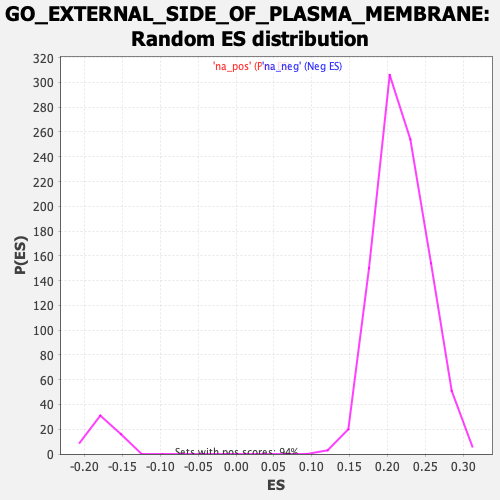

| | | Dataset | Recurrence |
| Phenotype | NoPhenotypeAvailable |
| Upregulated in class | na_pos |
| GeneSet | GO_EXTERNAL_SIDE_OF_PLASMA_MEMBRANE |
| Enrichment Score (ES) | 0.46249336 |
| Normalized Enrichment Score (NES) | 2.1159866 |
| Nominal p-value | 0.0 |
| FDR q-value | 0.012594994 |
| FWER p-Value | 0.036 |
Table: GSEA Results Summary
 Fig 1: Enrichment plot: GO_EXTERNAL_SIDE_OF_PLASMA_MEMBRANE
Fig 1: Enrichment plot: GO_EXTERNAL_SIDE_OF_PLASMA_MEMBRANE
Profile of the Running ES Score & Positions of GeneSet Members on the Rank Ordered List
| SYMBOL | RANK IN GENE LIST | RANK METRIC SCORE | RUNNING ES | CORE ENRICHMENT | | 1 | MS4A1 | 4 | 3.912 | 0.0133 | Yes |
| 2 | CD74 | 11 | 3.513 | 0.0251 | Yes |
| 3 | TGFBR3 | 20 | 3.285 | 0.0360 | Yes |
| 4 | CCR7 | 35 | 3.057 | 0.0459 | Yes |
| 5 | CD163 | 42 | 2.981 | 0.0559 | Yes |
| 6 | TLR8 | 45 | 2.965 | 0.0660 | Yes |
| 7 | CD3D | 49 | 2.919 | 0.0759 | Yes |
| 8 | CD86 | 81 | 2.735 | 0.0837 | Yes |
| 9 | CXCR4 | 103 | 2.636 | 0.0918 | Yes |
| 10 | S1PR1 | 117 | 2.588 | 0.1000 | Yes |
| 11 | TNFRSF14 | 145 | 2.520 | 0.1073 | Yes |
| 12 | GLRA1 | 159 | 2.479 | 0.1152 | Yes |
| 13 | CD83 | 179 | 2.427 | 0.1226 | Yes |
| 14 | PDCD1LG2 | 192 | 2.399 | 0.1303 | Yes |
| 15 | CXCL9 | 196 | 2.390 | 0.1383 | Yes |
| 16 | CCRL2 | 209 | 2.370 | 0.1459 | Yes |
| 17 | CD36 | 217 | 2.348 | 0.1537 | Yes |
| 18 | IL13RA1 | 225 | 2.317 | 0.1613 | Yes |
| 19 | CXCR3 | 277 | 2.211 | 0.1663 | Yes |
| 20 | CXCL12 | 303 | 2.167 | 0.1725 | Yes |
| 21 | CCR5 | 356 | 2.085 | 0.1770 | Yes |
| 22 | AMOT | 376 | 2.064 | 0.1831 | Yes |
| 23 | ENG | 402 | 2.040 | 0.1888 | Yes |
| 24 | CAPN2 | 425 | 2.016 | 0.1947 | Yes |
| 25 | CA4 | 494 | 1.940 | 0.1978 | Yes |
| 26 | TLR4 | 508 | 1.926 | 0.2038 | Yes |
| 27 | CTSK | 512 | 1.924 | 0.2103 | Yes |
| 28 | ECE1 | 524 | 1.914 | 0.2163 | Yes |
| 29 | SEMA7A | 609 | 1.851 | 0.2183 | Yes |
| 30 | ANPEP | 613 | 1.850 | 0.2246 | Yes |
| 31 | ITGA5 | 627 | 1.842 | 0.2302 | Yes |
| 32 | CD6 | 632 | 1.840 | 0.2364 | Yes |
| 33 | CTSB | 641 | 1.834 | 0.2423 | Yes |
| 34 | FCGR2B | 661 | 1.822 | 0.2476 | Yes |
| 35 | ANTXR1 | 690 | 1.798 | 0.2524 | Yes |
| 36 | PTPRC | 902 | 1.670 | 0.2471 | Yes |
| 37 | IL1R1 | 950 | 1.643 | 0.2504 | Yes |
| 38 | ITGA2 | 972 | 1.634 | 0.2549 | Yes |
| 39 | STAB2 | 1003 | 1.622 | 0.2590 | Yes |
| 40 | CD209 | 1015 | 1.615 | 0.2640 | Yes |
| 41 | CD22 | 1028 | 1.604 | 0.2689 | Yes |
| 42 | IL2RG | 1042 | 1.600 | 0.2737 | Yes |
| 43 | SELL | 1069 | 1.585 | 0.2778 | Yes |
| 44 | CTLA4 | 1089 | 1.575 | 0.2823 | Yes |
| 45 | ACKR4 | 1097 | 1.574 | 0.2874 | Yes |
| 46 | ADAM30 | 1175 | 1.541 | 0.2887 | Yes |
| 47 | SPN | 1191 | 1.536 | 0.2932 | Yes |
| 48 | FOLR1 | 1219 | 1.525 | 0.2971 | Yes |
| 49 | CD27 | 1256 | 1.510 | 0.3004 | Yes |
| 50 | CLEC2B | 1281 | 1.501 | 0.3043 | Yes |
| 51 | ITGA6 | 1356 | 1.470 | 0.3056 | Yes |
| 52 | CCR1 | 1376 | 1.465 | 0.3096 | Yes |
| 53 | IL6R | 1426 | 1.448 | 0.3121 | Yes |
| 54 | FGG | 1563 | 1.397 | 0.3098 | Yes |
| 55 | CD40 | 1669 | 1.364 | 0.3090 | Yes |
| 56 | CD248 | 1686 | 1.357 | 0.3129 | Yes |
| 57 | CLPTM1 | 1745 | 1.339 | 0.3145 | Yes |
| 58 | DNAI2 | 1774 | 1.325 | 0.3176 | Yes |
| 59 | SLC38A1 | 1805 | 1.315 | 0.3206 | Yes |
| 60 | TMEM123 | 1809 | 1.314 | 0.3250 | Yes |
| 61 | CCR10 | 1840 | 1.305 | 0.3279 | Yes |
| 62 | CD1E | 1865 | 1.296 | 0.3312 | Yes |
| 63 | ULBP1 | 1908 | 1.287 | 0.3334 | Yes |
| 64 | CCR2 | 1915 | 1.286 | 0.3375 | Yes |
| 65 | LEPR | 1996 | 1.266 | 0.3377 | Yes |
| 66 | CD1C | 2010 | 1.263 | 0.3414 | Yes |
| 67 | IGLL5 | 2047 | 1.253 | 0.3439 | Yes |
| 68 | IGLL1 | 2062 | 1.250 | 0.3475 | Yes |
| 69 | SLC4A3 | 2080 | 1.247 | 0.3509 | Yes |
| 70 | CTSV | 2125 | 1.236 | 0.3529 | Yes |
| 71 | TNFRSF4 | 2135 | 1.234 | 0.3567 | Yes |
| 72 | CD276 | 2144 | 1.230 | 0.3605 | Yes |
| 73 | TFR2 | 2146 | 1.230 | 0.3647 | Yes |
| 74 | IL7R | 2239 | 1.210 | 0.3641 | Yes |
| 75 | TGFBR2 | 2278 | 1.202 | 0.3662 | Yes |
| 76 | CD3G | 2320 | 1.191 | 0.3682 | Yes |
| 77 | IZUMO1R | 2329 | 1.189 | 0.3719 | Yes |
| 78 | EBI3 | 2372 | 1.178 | 0.3738 | Yes |
| 79 | INSR | 2396 | 1.173 | 0.3766 | Yes |
| 80 | CUBN | 2423 | 1.168 | 0.3793 | Yes |
| 81 | IL12B | 2445 | 1.162 | 0.3822 | Yes |
| 82 | SLC7A5 | 2476 | 1.156 | 0.3847 | Yes |
| 83 | ANXA5 | 2491 | 1.154 | 0.3879 | Yes |
| 84 | CCR9 | 2517 | 1.149 | 0.3906 | Yes |
| 85 | CD79A | 2526 | 1.147 | 0.3941 | Yes |
| 86 | GFRA2 | 2545 | 1.142 | 0.3972 | Yes |
| 87 | FOLR3 | 2563 | 1.138 | 0.4002 | Yes |
| 88 | TRPM8 | 2653 | 1.118 | 0.3994 | Yes |
| 89 | FCER1G | 2665 | 1.116 | 0.4027 | Yes |
| 90 | TFRC | 2681 | 1.112 | 0.4058 | Yes |
| 91 | CD274 | 2724 | 1.104 | 0.4074 | Yes |
| 92 | MAP3K5 | 2813 | 1.086 | 0.4066 | Yes |
| 93 | BTNL10 | 2832 | 1.082 | 0.4094 | Yes |
| 94 | CSF2RA | 2851 | 1.078 | 0.4121 | Yes |
| 95 | LDLR | 2862 | 1.076 | 0.4153 | Yes |
| 96 | CD5 | 2888 | 1.072 | 0.4177 | Yes |
| 97 | RAET1E | 2891 | 1.072 | 0.4213 | Yes |
| 98 | BCAM | 2948 | 1.059 | 0.4221 | Yes |
| 99 | SLC22A11 | 2952 | 1.059 | 0.4256 | Yes |
| 100 | THBS1 | 2957 | 1.058 | 0.4290 | Yes |
| 101 | CD28 | 3015 | 1.048 | 0.4297 | Yes |
| 102 | TNFRSF9 | 3033 | 1.044 | 0.4324 | Yes |
| 103 | IL11RA | 3040 | 1.043 | 0.4357 | Yes |
| 104 | FASLG | 3070 | 1.037 | 0.4377 | Yes |
| 105 | PDGFRA | 3081 | 1.035 | 0.4408 | Yes |
| 106 | BTN3A3 | 3159 | 1.021 | 0.4403 | Yes |
| 107 | B4GALT1 | 3241 | 1.007 | 0.4396 | Yes |
| 108 | VCAM1 | 3262 | 1.003 | 0.4420 | Yes |
| 109 | FCER2 | 3272 | 1.001 | 0.4450 | Yes |
| 110 | BTN3A2 | 3293 | 0.998 | 0.4474 | Yes |
| 111 | F2 | 3295 | 0.997 | 0.4508 | Yes |
| 112 | CXCL10 | 3307 | 0.993 | 0.4536 | Yes |
| 113 | CD1D | 3310 | 0.992 | 0.4570 | Yes |
| 114 | CCR6 | 3356 | 0.985 | 0.4580 | Yes |
| 115 | FLT3LG | 3395 | 0.977 | 0.4594 | Yes |
| 116 | B2M | 3497 | 0.958 | 0.4575 | Yes |
| 117 | CD34 | 3512 | 0.956 | 0.4600 | Yes |
| 118 | MOG | 3529 | 0.954 | 0.4625 | Yes |
| 119 | GFRA1 | 3653 | 0.932 | 0.4593 | No |
| 120 | FCN1 | 3667 | 0.930 | 0.4618 | No |
| 121 | CLEC2D | 3767 | 0.914 | 0.4598 | No |
| 122 | IL2RB | 3924 | 0.886 | 0.4548 | No |
| 123 | BTNL9 | 4033 | 0.870 | 0.4522 | No |
| 124 | IL17A | 4034 | 0.870 | 0.4552 | No |
| 125 | IL3RA | 4094 | 0.859 | 0.4550 | No |
| 126 | ICOS | 4142 | 0.853 | 0.4555 | No |
| 127 | CLEC14A | 4156 | 0.851 | 0.4578 | No |
| 128 | CDH5 | 4253 | 0.835 | 0.4557 | No |
| 129 | MSR1 | 4302 | 0.829 | 0.4561 | No |
| 130 | CDH13 | 4329 | 0.825 | 0.4576 | No |
| 131 | ATP6AP2 | 4346 | 0.821 | 0.4596 | No |
| 132 | IGSF21 | 4371 | 0.818 | 0.4611 | No |
| 133 | TNFRSF18 | 4609 | 0.784 | 0.4515 | No |
| 134 | CD69 | 4673 | 0.775 | 0.4509 | No |
| 135 | PLET1 | 4726 | 0.769 | 0.4508 | No |
| 136 | CD14 | 4776 | 0.761 | 0.4509 | No |
| 137 | FGA | 4870 | 0.744 | 0.4486 | No |
| 138 | PKHD1 | 4883 | 0.741 | 0.4506 | No |
| 139 | CSF3R | 4937 | 0.734 | 0.4503 | No |
| 140 | ITGAV | 4947 | 0.733 | 0.4524 | No |
| 141 | OSMR | 4975 | 0.728 | 0.4535 | No |
| 142 | CD33 | 5034 | 0.720 | 0.4530 | No |
| 143 | TRPV1 | 5064 | 0.717 | 0.4539 | No |
| 144 | IL5RA | 5097 | 0.711 | 0.4547 | No |
| 145 | ADGRE1 | 5191 | 0.698 | 0.4523 | No |
| 146 | CD19 | 5258 | 0.690 | 0.4512 | No |
| 147 | ADGRA3 | 5264 | 0.689 | 0.4534 | No |
| 148 | BTN3A1 | 5299 | 0.685 | 0.4540 | No |
| 149 | CCR4 | 5329 | 0.680 | 0.4548 | No |
| 150 | ULBP3 | 5346 | 0.678 | 0.4563 | No |
| 151 | IL1RL1 | 5494 | 0.657 | 0.4509 | No |
| 152 | CHRNA4 | 5627 | 0.641 | 0.4463 | No |
| 153 | GPC4 | 5664 | 0.635 | 0.4466 | No |
| 154 | GRIA2 | 5675 | 0.634 | 0.4482 | No |
| 155 | THBD | 5819 | 0.616 | 0.4429 | No |
| 156 | HFE | 5926 | 0.603 | 0.4395 | No |
| 157 | THY1 | 6015 | 0.592 | 0.4369 | No |
| 158 | F10 | 6044 | 0.589 | 0.4375 | No |
| 159 | TNFRSF11A | 6114 | 0.579 | 0.4359 | No |
| 160 | ADAM21 | 6238 | 0.563 | 0.4315 | No |
| 161 | CD3E | 6281 | 0.557 | 0.4312 | No |
| 162 | ADAM20 | 6399 | 0.543 | 0.4270 | No |
| 163 | PECAM1 | 6404 | 0.543 | 0.4286 | No |
| 164 | ABCC4 | 6405 | 0.543 | 0.4305 | No |
| 165 | ASTN1 | 6515 | 0.531 | 0.4267 | No |
| 166 | SERPINA5 | 6520 | 0.530 | 0.4283 | No |
| 167 | RAET1L | 6636 | 0.516 | 0.4241 | No |
| 168 | ABCA1 | 6695 | 0.509 | 0.4228 | No |
| 169 | IL13 | 6829 | 0.494 | 0.4176 | No |
| 170 | MFGE8 | 6844 | 0.492 | 0.4186 | No |
| 171 | SDC1 | 6961 | 0.476 | 0.4142 | No |
| 172 | CRLF2 | 7086 | 0.460 | 0.4093 | No |
| 173 | KLRD1 | 7141 | 0.453 | 0.4081 | No |
| 174 | P2RX1 | 7147 | 0.452 | 0.4094 | No |
| 175 | AZGP1 | 7219 | 0.444 | 0.4072 | No |
| 176 | TNFRSF13C | 7236 | 0.443 | 0.4079 | No |
| 177 | ATP1B2 | 7306 | 0.435 | 0.4058 | No |
| 178 | ITGAE | 7480 | 0.415 | 0.3982 | No |
| 179 | VTCN1 | 7603 | 0.398 | 0.3932 | No |
| 180 | BTN1A1 | 7662 | 0.392 | 0.3916 | No |
| 181 | ICOSLG | 7742 | 0.383 | 0.3888 | No |
| 182 | ITGAM | 7763 | 0.380 | 0.3890 | No |
| 183 | HHLA2 | 7777 | 0.379 | 0.3897 | No |
| 184 | EPHA5 | 8151 | 0.337 | 0.3714 | No |
| 185 | LY6G6C | 8189 | 0.333 | 0.3706 | No |
| 186 | IL12RB2 | 8218 | 0.329 | 0.3703 | No |
| 187 | ITGB2 | 8220 | 0.329 | 0.3714 | No |
| 188 | ICAM1 | 8560 | 0.295 | 0.3548 | No |
| 189 | GPIHBP1 | 8605 | 0.291 | 0.3535 | No |
| 190 | NCAM1 | 8625 | 0.289 | 0.3535 | No |
| 191 | BTN2A2 | 8816 | 0.268 | 0.3445 | No |
| 192 | SELP | 8819 | 0.267 | 0.3453 | No |
| 193 | PDCD1 | 8885 | 0.260 | 0.3428 | No |
| 194 | LY6G6D | 8905 | 0.259 | 0.3427 | No |
| 195 | RTN4R | 8969 | 0.252 | 0.3403 | No |
| 196 | HEG1 | 8985 | 0.250 | 0.3404 | No |
| 197 | FOLR2 | 9101 | 0.235 | 0.3352 | No |
| 198 | LILRB1 | 9124 | 0.233 | 0.3349 | No |
| 199 | CD79B | 9178 | 0.226 | 0.3329 | No |
| 200 | CXCR5 | 9226 | 0.220 | 0.3312 | No |
| 201 | IL2RA | 9317 | 0.211 | 0.3273 | No |
| 202 | IL6ST | 9493 | 0.192 | 0.3188 | No |
| 203 | GFRAL | 9559 | 0.184 | 0.3161 | No |
| 204 | ADAM9 | 9570 | 0.182 | 0.3162 | No |
| 205 | GP1BA | 9589 | 0.181 | 0.3159 | No |
| 206 | ENPEP | 9758 | 0.164 | 0.3077 | No |
| 207 | F3 | 9842 | 0.156 | 0.3039 | No |
| 208 | CLEC2A | 9869 | 0.153 | 0.3031 | No |
| 209 | CD8A | 9919 | 0.148 | 0.3010 | No |
| 210 | ABCB1 | 9993 | 0.140 | 0.2977 | No |
| 211 | LIFR | 10197 | 0.117 | 0.2875 | No |
| 212 | SERPINE2 | 10247 | 0.112 | 0.2854 | No |
| 213 | ITGB1 | 10352 | 0.100 | 0.2803 | No |
| 214 | TNF | 10392 | 0.096 | 0.2786 | No |
| 215 | SCARA5 | 10393 | 0.096 | 0.2789 | No |
| 216 | HYAL2 | 10438 | 0.091 | 0.2770 | No |
| 217 | CD244 | 10481 | 0.086 | 0.2751 | No |
| 218 | IL13RA2 | 10482 | 0.086 | 0.2754 | No |
| 219 | GFRA4 | 10593 | 0.075 | 0.2699 | No |
| 220 | P2RX7 | 10703 | 0.063 | 0.2644 | No |
| 221 | GSR | 10921 | 0.036 | 0.2533 | No |
| 222 | WNT2 | 10962 | 0.032 | 0.2513 | No |
| 223 | FGB | 11057 | 0.022 | 0.2465 | No |
| 224 | ENOX1 | 11092 | 0.019 | 0.2448 | No |
| 225 | ITGA2B | 11144 | 0.013 | 0.2421 | No |
| 226 | PRNP | 11173 | 0.009 | 0.2407 | No |
| 227 | EFNA5 | 11207 | 0.005 | 0.2390 | No |
| 228 | ACKR2 | 11210 | 0.004 | 0.2389 | No |
| 229 | TF | 11318 | -0.009 | 0.2334 | No |
| 230 | TMC1 | 11344 | -0.011 | 0.2321 | No |
| 231 | CXCR2 | 11650 | -0.044 | 0.2164 | No |
| 232 | ENOX2 | 11758 | -0.057 | 0.2110 | No |
| 233 | KCNJ3 | 11851 | -0.069 | 0.2065 | No |
| 234 | LRP2 | 11910 | -0.076 | 0.2037 | No |
| 235 | LY6G5B | 11935 | -0.078 | 0.2027 | No |
| 236 | MCAM | 11965 | -0.083 | 0.2015 | No |
| 237 | BTNL8 | 12006 | -0.089 | 0.1997 | No |
| 238 | CD1B | 12034 | -0.092 | 0.1986 | No |
| 239 | ULBP2 | 12039 | -0.092 | 0.1987 | No |
| 240 | MICA | 12148 | -0.105 | 0.1935 | No |
| 241 | CHRNB2 | 12151 | -0.105 | 0.1937 | No |
| 242 | ERMAP | 12213 | -0.113 | 0.1909 | No |
| 243 | CALR | 12245 | -0.118 | 0.1897 | No |
| 244 | CD2 | 12318 | -0.126 | 0.1864 | No |
| 245 | CD200R1L | 12330 | -0.127 | 0.1863 | No |
| 246 | SCUBE1 | 12473 | -0.143 | 0.1794 | No |
| 247 | CX3CR1 | 12612 | -0.159 | 0.1727 | No |
| 248 | PRND | 12642 | -0.163 | 0.1718 | No |
| 249 | BTNL2 | 12656 | -0.165 | 0.1717 | No |
| 250 | MR1 | 12795 | -0.182 | 0.1651 | No |
| 251 | PCSK9 | 12821 | -0.186 | 0.1645 | No |
| 252 | SPA17 | 13092 | -0.226 | 0.1512 | No |
| 253 | ADA | 13108 | -0.228 | 0.1512 | No |
| 254 | CD163L1 | 13145 | -0.232 | 0.1501 | No |
| 255 | MUC17 | 13250 | -0.244 | 0.1455 | No |
| 256 | NRCAM | 13292 | -0.250 | 0.1443 | No |
| 257 | CD1A | 13302 | -0.251 | 0.1447 | No |
| 258 | IL12RB1 | 13349 | -0.259 | 0.1432 | No |
| 259 | FCRL6 | 13424 | -0.269 | 0.1402 | No |
| 260 | ADAM29 | 13429 | -0.270 | 0.1410 | No |
| 261 | BTN2A3P | 13576 | -0.289 | 0.1344 | No |
| 262 | CD59 | 13619 | -0.295 | 0.1332 | No |
| 263 | CXCR6 | 13666 | -0.303 | 0.1318 | No |
| 264 | LY6G5C | 13846 | -0.325 | 0.1236 | No |
| 265 | NLGN1 | 13872 | -0.327 | 0.1235 | No |
| 266 | LAG3 | 13951 | -0.337 | 0.1206 | No |
| 267 | DAG1 | 13975 | -0.340 | 0.1205 | No |
| 268 | ALCAM | 14105 | -0.356 | 0.1151 | No |
| 269 | ANXA1 | 14128 | -0.359 | 0.1151 | No |
| 270 | MICB | 14154 | -0.364 | 0.1151 | No |
| 271 | PRLR | 14165 | -0.366 | 0.1158 | No |
| 272 | MS4A2 | 14215 | -0.372 | 0.1146 | No |
| 273 | IL23R | 14248 | -0.376 | 0.1142 | No |
| 274 | CD9 | 14251 | -0.377 | 0.1154 | No |
| 275 | GFRA3 | 14327 | -0.387 | 0.1128 | No |
| 276 | IL27RA | 14338 | -0.388 | 0.1137 | No |
| 277 | CD80 | 14350 | -0.390 | 0.1144 | No |
| 278 | ENPP3 | 14351 | -0.390 | 0.1158 | No |
| 279 | LAMP1 | 14393 | -0.395 | 0.1150 | No |
| 280 | ITGB6 | 14424 | -0.399 | 0.1148 | No |
| 281 | RTBDN | 14461 | -0.403 | 0.1143 | No |
| 282 | FAS | 14582 | -0.420 | 0.1095 | No |
| 283 | AQP4 | 14589 | -0.421 | 0.1107 | No |
| 284 | FLOT1 | 14592 | -0.421 | 0.1120 | No |
| 285 | CD4 | 14738 | -0.440 | 0.1060 | No |
| 286 | UMODL1 | 14875 | -0.459 | 0.1005 | No |
| 287 | CNTFR | 14978 | -0.475 | 0.0968 | No |
| 288 | IDE | 15110 | -0.495 | 0.0917 | No |
| 289 | CCR8 | 15314 | -0.525 | 0.0830 | No |
| 290 | RTN4RL1 | 15465 | -0.547 | 0.0770 | No |
| 291 | ABCG1 | 15556 | -0.563 | 0.0743 | No |
| 292 | FCGR3A | 15622 | -0.575 | 0.0729 | No |
| 293 | BTN2A1 | 15678 | -0.585 | 0.0720 | No |
| 294 | ANTXR2 | 15898 | -0.618 | 0.0628 | No |
| 295 | RTN4RL2 | 15922 | -0.622 | 0.0637 | No |
| 296 | KCNJ5 | 15964 | -0.630 | 0.0638 | No |
| 297 | SLC2A4 | 15972 | -0.631 | 0.0656 | No |
| 298 | CD24 | 16081 | -0.645 | 0.0622 | No |
| 299 | XCR1 | 16144 | -0.654 | 0.0612 | No |
| 300 | PLG | 16432 | -0.704 | 0.0487 | No |
| 301 | RAET1G | 16436 | -0.704 | 0.0510 | No |
| 302 | IL31RA | 16491 | -0.714 | 0.0506 | No |
| 303 | CLCN3 | 16515 | -0.719 | 0.0519 | No |
| 304 | FCGRT | 16658 | -0.746 | 0.0471 | No |
| 305 | CEACAM5 | 16749 | -0.765 | 0.0450 | No |
| 306 | SCNN1B | 17091 | -0.840 | 0.0302 | No |
| 307 | CRLF1 | 17279 | -0.883 | 0.0235 | No |
| 308 | BTNL3 | 17448 | -0.922 | 0.0179 | No |
| 309 | CD200R1 | 17501 | -0.937 | 0.0185 | No |
| 310 | CLEC12B | 17704 | -0.988 | 0.0113 | No |
| 311 | FGF8 | 17731 | -0.993 | 0.0134 | No |
| 312 | CXCR1 | 17992 | -1.077 | 0.0036 | No |
| 313 | ACE | 18327 | -1.185 | -0.0097 | No |
| 314 | CD226 | 18380 | -1.205 | -0.0083 | No |
| 315 | CCR3 | 18492 | -1.261 | -0.0097 | No |
| 316 | P4HB | 18584 | -1.301 | -0.0099 | No |
| 317 | ACKR3 | 18701 | -1.366 | -0.0113 | No |
| 318 | ABCG2 | 18760 | -1.392 | -0.0095 | No |
| 319 | GHR | 18873 | -1.459 | -0.0103 | No |
| 320 | SCNN1G | 18920 | -1.485 | -0.0075 | No |
| 321 | BMPR1A | 19118 | -1.629 | -0.0122 | No |
| 322 | CD40LG | 19142 | -1.663 | -0.0076 | No |
| 323 | KIT | 19155 | -1.675 | -0.0025 | No |
| 324 | ITGA3 | 19388 | -2.062 | -0.0074 | No |
| 325 | P2RY12 | 19395 | -2.070 | -0.0006 | No |
| 326 | TAS2R16 | 19408 | -2.100 | 0.0060 | No |
Table: GSEA details [plain text format]

Fig 2: GO_EXTERNAL_SIDE_OF_PLASMA_MEMBRANE: Random ES distribution
Gene set null distribution of ES for GO_EXTERNAL_SIDE_OF_PLASMA_MEMBRANE